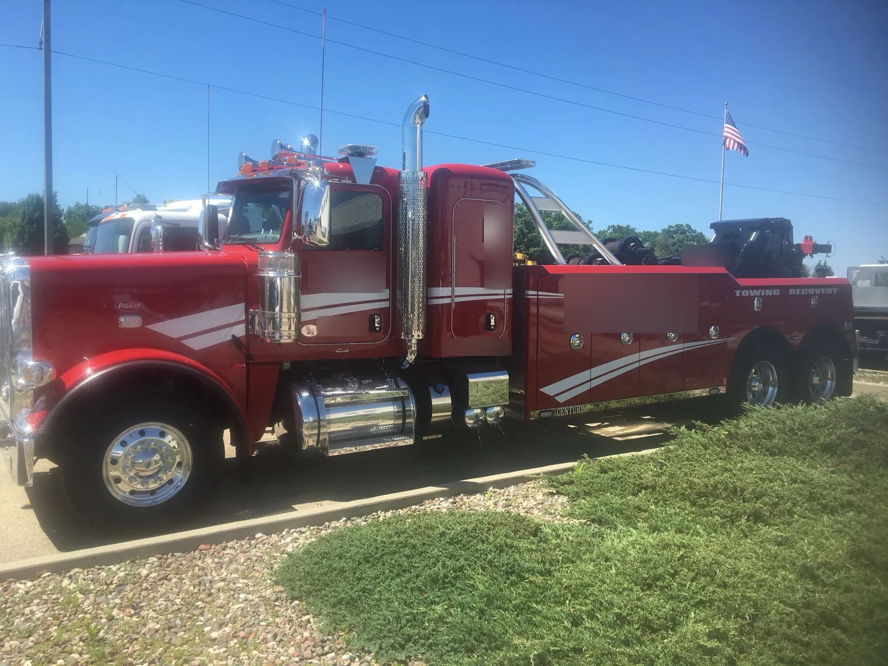

Reviews
4.4 stars. 450 reviews.
Real Google reviews, quoted word for word. Click through to read every one on Google, the good and the bad.
What 450 reviewers say.
- “Fast timing, affordable prices, good customer service, and very helpful.”
- “Fast; gave me an ETA of an hour and showed up in 30 mins.”
Review highlights as summarized on the Google listing.
Word for word
In their own words.
Stars are shown where we could confirm them. Some older reviews mention a different company name.
“just helped my little brother tow his silverado truck. got there just in time before the storm. 5 stars, man who was over the phone is the goat. tow man was awesome. thank you guys again! 10/10”
“Very quick, courteous and polite. Quick to load and get your vehicle to the repair shop of your choice, I’d use them anytime”
“This company was amazing! They were so accommodating. I had to leave, to go get my loaner car as I had an appointment to get to, and they came and got my car out of the garage and shut the garage behind them. Then they even sent me a picture of it closed when they left and delivered my car to the dealership. I really appreciate the great communication and above and beyond efforts from these drivers who got the job done hassle free!”
“These people are awesome my car broke down in the middle of the road and they towed it for me back to my house. I called them a few days later and they came and got it for me and fixed it the next day! They were really nice to me and I recommend anybody to them! Thank u!”
“My driver never called me but was very professional. His name was Doug. I only needed a short tow which was 3 miles. Even though I broken down I still made the best of my short wait which was only 20-30 minutes. Wasn't timing the dispatcher honestly. Just feeling the comfort help was on the way. I'll be using them again and honestly their rates are very affordable and competitive.”
“Fast; gave me an ETA of an hour and showed up in 30 mins. Friendly and courteous. And affordable. Half as much as the previous service I used (who wanted to add an extra charge for everything. When you are female caught out with your car down who needs that? ) I recommend Reliable with no reservations. I am very happy with the service I received.”
“My insurance company contracted Reliable after another towing company cancelled the tow job after waiting hours. Reliable finished their job and made it to my car within 30 mins! He even jumped my car to make sure it was not a battery issue and offered to take it to a local mechanic shop. Great service!”
“The guys are very friendly. Gave you options on how to deal with your troubled car. We called them they got there with in 30min. They offered their mechanic which is also very professional and not pushy. The mechanic was very honest and if he was not able to fix it he recommended a transmission expert. THANKS for making an unpleasant time pleasant”
“These guys were fast and at a fair price, I was broke down at a major intersection in Dallas and they scooped my truck up in under 5 minutes.. I highly recommend them, driver was safety first but understood the urgency to get the vehicle out of people’s way! Well done reliable, well done!”
As shown on Google; the full review may continue there.
Owner reply on Google
“Jaye, Thank you for the great review. We're glad that we were able to assist your brother.”
In reply to jaye

Your turn to be a happy review.
Car and flatbed towing out of Garland. Call (469) 756-9818 for a live ETA.
Hours: Mon–Tue 6 AM–12 AM CT